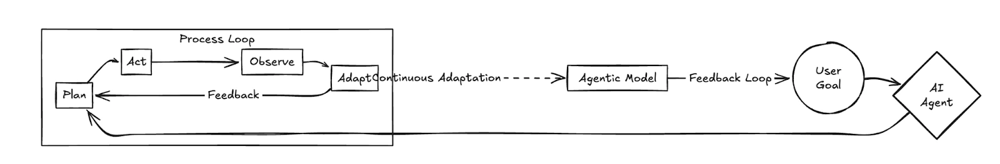
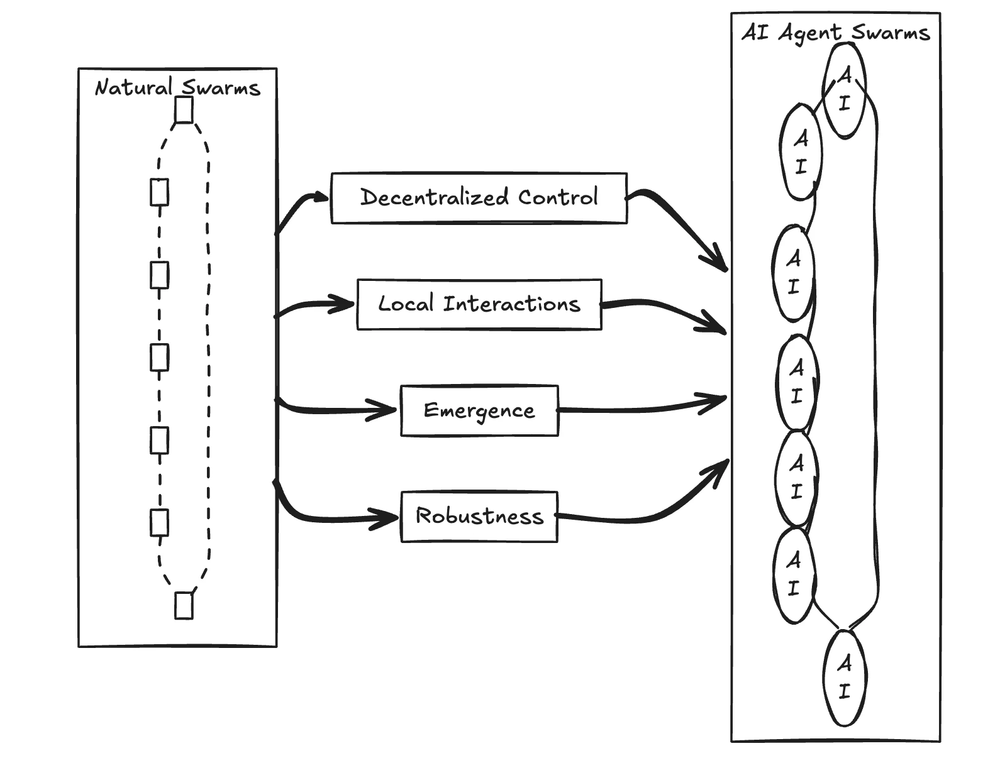

I've been thinking a lot lately about what changes when an LLM stops being a thing you talk to and starts being a thing that goes off and does stuff. It's a small shift in framing, but it makes me wonder if we've actually grasped how big the difference is.
For most of the last couple of years, my mental model of working with an LLM was a conversation. I ask, it answers. I correct, it tries again. The whole loop sat inside a chat window, and I was the conductor of every step. Agents break that model. You give an agent a goal, and it picks the steps. It decides what to look up, what tool to call, when it's done. I'm not in the loop anymore. I'm at the start of it and, hopefully, at the end.
That shift fascinates me. It also unsettles me a little. So I wanted to write down what I've been turning over.
What is an agent, really?
The simplest definition I keep coming back to is this: an agent is an LLM that has been given the ability to take actions in the world and the autonomy to decide which actions to take. That's it. The model is still the brain. What changes is that it now has hands.
Those hands are usually tools: a search function, a code interpreter, a database query, an email client, a browser. The agent reads its goal, looks at what tools are available, picks one, observes the result, and then loops. It keeps looping until it thinks it's finished, or until it hits some limit you've set.
What makes this feel like a phase change rather than a feature is the autonomy part. A workflow knows the steps. An agent picks them. That difference is the whole story.

From one agent to many
Once you have one agent, the next thing you start to wonder is what happens when you have several. That's where multi-agent systems come in, and where things get genuinely interesting.
The pattern that keeps showing up is specialisation. One agent plans. One agent researches. One agent writes. One agent critiques the writer. Each one is narrower than a single do-everything model, but the group together is often better than the sum of its parts. It reminds me of how a small, well-functioning team works. The product manager isn't a better engineer than the engineers, and the engineers aren't better designers than the designer, but the four of them in a room can build something none of them could build alone.
What I find genuinely surprising is how much of "good multi-agent design" turns out to look like good org design. Who reports to whom. Who has the authority to make a final call. How do you stop two agents from arguing in circles. How do you write a goal clearly enough that nobody downstream has to guess at what you meant. Engineers who've never run a team are suddenly being asked to design one, in software, for the first time.
Swarms, and the part that makes me think
And then there are swarms. Swarm intelligence is the older idea here, borrowed from how ant colonies and bird flocks behave. No ant is in charge. No bird has the flight plan. The intelligence lives in the interaction between many simple agents following a few simple rules. Apply that idea to LLMs and you get something that doesn't have a manager-and-workers shape at all. It has a flock shape.
That's the part that really makes me wonder. Most software I've ever built has been hierarchical. There's a main function. It calls other functions. Control flows down and results bubble up. Swarms aren't like that. They're more like a weather system. You set the conditions and watch what emerges. The behaviour is real, but it isn't sitting in any one place in the code.
An agent is an LLM that has been given hands. A swarm is what happens when you stop telling the hands which order to move in.

What I think we're actually learning
The honest answer is that I don't know yet whether the agentic future is a year away or five. The demos are impressive and the production systems are still fragile. Agents get stuck in loops. They confidently use the wrong tool. They forget what they were doing halfway through. Anyone who tells you they've fully solved this is selling you something.
But the direction feels right to me, and that's why I keep writing about it. We've spent two years getting good at conversations with models. The next thing we're going to have to get good at is delegation. Knowing what to hand off, how to describe a goal so it survives translation, when to step back in, and when to trust that the thing will figure it out. Those are old skills, dressed up in new clothes.
It makes me wonder if the most useful person on an AI team five years from now isn't the best prompter. It's the best manager.